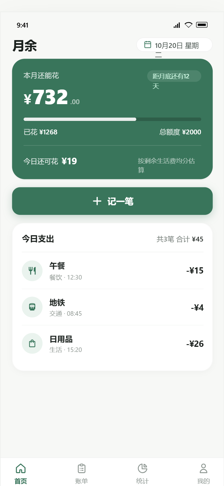

剩余多少，一眼看清
设置本月生活费，支出后自动更新余额。今日参考额度，帮你分配剩下的日子。
本月还能花¥732
已花 ¥1268生活费 ¥2000

从食堂的一顿午饭，到周末的小计划。
把日常记下来，给月底留一点余地。
设置本月生活费，支出后自动更新余额。今日参考额度，帮你分配剩下的日子。
输入金额，选择分类，保存。支出、收入都能记，也可以补记和修改过去的消费。
分类统计和最近七天趋势，把零散的账单变成清楚的消费习惯。
余额、账单、统计各司其职。
想记一笔，随时开始。
当前 Android 版离线运行，不需要账号，也不会上传你的账单。
支持导出 CSV 和 JSON 备份，换设备时可以手动恢复。
卸载应用或清除应用数据会删除记录，请提前下载并保管备份。
设置生活费，记下日常。
不必等下个月，现在就可以开始。
用安卓手机打开本站并下载 APK，点击文件开始安装。如果系统提示未允许此来源安装，请按手机提示为当前浏览器或文件管理器开启安装权限，再继续安装。
不需要。当前安装包为离线版，首次打开设置生活费即可记账，电脑不需要保持运行。
应用使用手机已有的 Android WebView 显示界面，页面和记账逻辑随安装包提供，不包含独立浏览器引擎，因此安装包较小。
在「我的—数据管理」下载完整 JSON 备份，保存到应用之外的位置。新手机安装后，在数据管理中选择该备份恢复。CSV 用于查看账单，JSON 用于恢复数据。
可以。先在网页版下载完整 JSON 备份，再传到手机，在安装版的数据管理中恢复。恢复会替换手机内的现有记录，请先备份。
当前只提供 Android APK，iPhone 无法安装。暂未提供 iOS 安装包。
已通过安装包签名校验与离线记账逻辑测试，尚未完成安卓真机兼容性测试。如遇问题，请先备份账单。